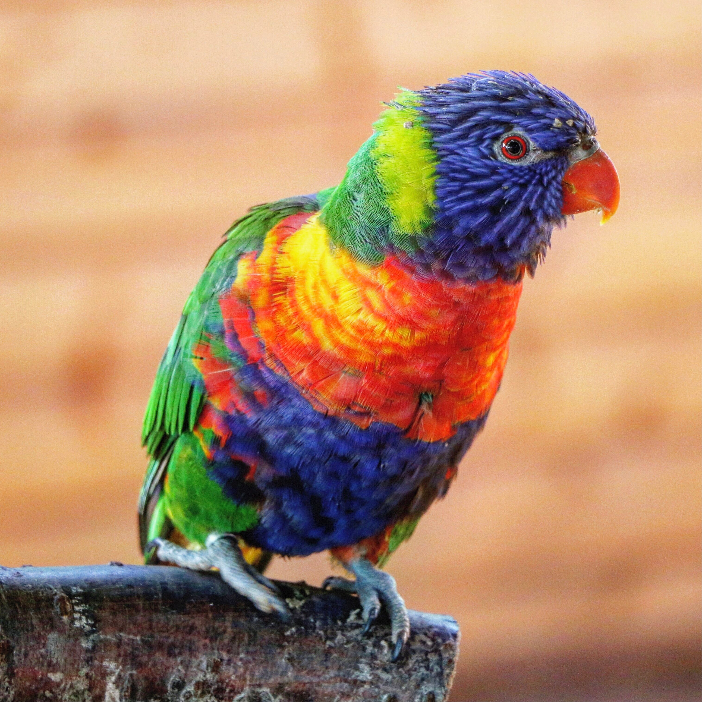

The Rainbow Lorikeet is a brilliantly coloured parrot with a blue head, orange-red breast, green wings and back, and a bright red bill. Its colourful plumage makes it one of the easiest Australian parrots to recognise. Rainbow Lorikeets usually travel in noisy, fast-moving flocks and gather in large communal roosts. Unlike parrots that depend heavily on seeds, they are specialised feeders on nectar and pollen, using their brush-tipped tongues to collect food from flowers. They also eat fruit, seeds and some insects. They are well adapted to urban environments and are frequently seen in gardens and tree-lined suburbs. Their vivid colours and noisy flocking behaviour make them particularly conspicuous.